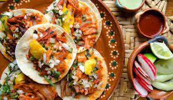

Tacos al Pastor

What is al pastor?
Al pastor is a dish is popular in Central Mexico. Not to be confused with the spit-grilled shawarma of Lebanese culture, Al pastor meat is typically pork-based in nature and is marinated in a combination of dried chilies, spices, and pineapple.
It is believed that the Mexican Al pastor originated from the Arab’s shawarma grilled meats. Having been derived from such a cooking style, tacos al pastor is similar to the Turkish döner kebab and Greek gyros. However, the Mexican meats made in this style can commonly be found in dishes such as gringas, alambres, and huaraches.
Ingredients
- 5 lb boneless pork shoulder (2 kg)
- 3 tbsp achiote paste
- 2 tbsps guajillo chilli powder
- 1 tbsp dried oregano
- 1 tbsp cumin
- 1 tbsp salt
- 1 tbsp pepper
- 3/4 cup white vinegar(175 ml)
- 1 cup pinneapple juice (240ml)
- 1 pinneapple, skinned and sliced into 1-inch(2cm) rounds
For serving
- 10 small corn tortillas
- 1 white onion, finely chopped
- 1 cup salsa
- 1 avocado, diced
- 2 limes, cut into wedges
Steps
- Slice the pork shoulder into about 1-centimeter (¼ in) slices, then transfer to a large dish or bowl. In a medium bowl, combine the achiote paste, chili powder, garlic powder, oregano, cumin, salt, pepper, vinegar, and pineapple juice, mashing and stirring until smooth with no lumps. Pour the marinade over the pork slices, then toss to make sure they are coated on all sides. Cover the bowl with plastic wrap, then refrigerate for at least 2 hours or up to 3 days.
- Preheat the oven to 350°F (180°C). Line a baking sheet with parchment paper or aluminum foil.
- Place a slice or two of the pineapple on the baking sheet. Take a wooden skewer and push it directly in the middle of the pineapple. Remove the pork from the fridge and push the slices through the skewer, layering one after the other until there is a 1-inch (2 ½ cm) gap at the top. Push another pineapple slice on top.
- Bake for about 1½ hours, until the pork is slightly charred on the outside and deep red. Rest the meat for about 10 minutes, then carve off thin slices of pork and roasted pineapple.
- To assemble, place some pork on the tortillas, followed by a few pieces of pineapple, a sprinkling of onion, a pinch of cilantro, and a spoonful of salsa, and some diced avocado. Serve with lime wedges.
- Enjoy!